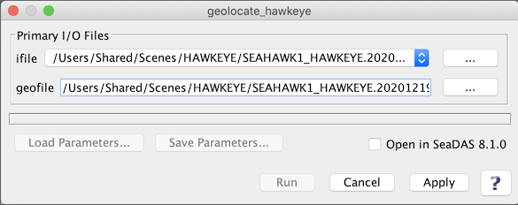

| geolocate_hawkeye | |
Creates a GEO file from HAWKEYE L1A input files.
Location
Details
Command Line Usage
SeaDAS-Toolobox -> SeaDAS Processors -> HAWKEYE -> geolocate_hawkeye
geolocate_hawkeye creates a GEO file from HAWKEYE L1A input files.
|  |
| UI Element Name | Type | Description | Required/Optional | Default Value |
| ifile | ifile | HAWKEYE_L1A_file name | Required | |
| geofile | ofile | GEOFILE Output filename | Required | Generated by the program based on the input L1A file name |
| UI Element Name | Type | Description |
| Browser Button | Button | Selects ifile/ofile |
| Run | Button | Executes the geolocate_hawkeye command with arguments provided in the UI. |
| Cancel | Button | Closes current processor GUI. |
| Apply | Button | Makes current arguments effective. |
| Open in SeaDAS | Checkbox | If selected, the ofile will be added to the open products list right after its generation. |
| ? | Button | Displays the help content of the current command. |
geolocate_hawkeye 0.761 (Jan 11 2022 14:31:26)